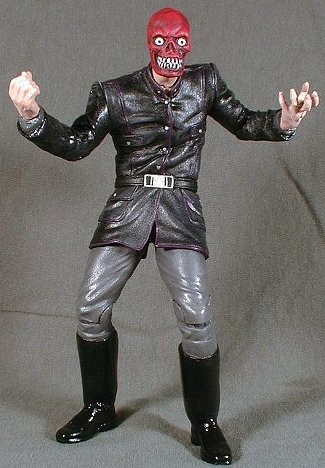

|  | The Red Skull was made from a Buffy Master figure with a Headless Horseman skull head. I sculpted eyeballs and trimmed the pointy teeth on the face. I also sculpted on jack boots and added wrist articulation. I carved a cosmic cube out of casting plastic and used an LED from another figure to light it up. I had to make a forearm-mounted assebly to hold the wiring and batteries. I tried to make it look like some kind of power harness for the cube. This figure has weird leg articulation, but it does allow him to sit down for an interview with Space Ghost. |